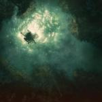
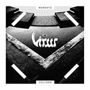
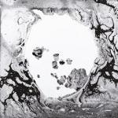

Music Reviews
-

Braids Companion
While the songs on Companion comes from the sessions for Braids' last full-length record, this EP is certainly not a collection of leftovers. It's much better than that.
Joe Marvilli finds a familiar companion... -
Laura Mvula The Dreaming Room
The Birmingham singer-songwriter looks within herself in The Dreaming Room, embarking on a spiritual journey that takes her from crippling apprehension to supreme self-dominance.
Juan Edgardo Rodríguez reviews... -

Virus Memento Collider
Norway’s Virus returns with their fourth LP, Memento Collider, the band’s hybridized blend of blackened punk, funk, and disco still fascinates even if it does sound like it’s been dialed back a tad.
Sean Caldwell reviews... -
Weaves Weaves
The Toronto art rock foursome write delightfully odd songs that spin in different directions, with a wealth of stylistic touches that prove there’s an eclectic array of musicianship to be found beyond their gimcrack adornments.
Juan Edgardo Rodríguez reviews... -
Garbage Strange Little Birds
Garbage's latest effort mixes up blistering rockers, seethingly dark anthems and a few bum notes.
Joe Marvilli gets magnetized... -
Barry Hyde Malody
The Futureheads frontman's first solo outing provides an unflinchingly bare look into mental illness.
Juan Edgardo Rodríguez reviews... -

Gold Panda Good Luck and Do Your Best
The English electronic producer documents in the form of a travelogue on Good Luck and Do Your Best, providing a gleaming, sensorial experience that leads one into the unforeseen.
Juan Edgardo Rodríguez takes a much-needed trip to... -
Mother Feather Mother Feather
Mother Feather's debut has an attitude and determination which guarantees that the band will not only survive, but thrive.
Joe Marvilli feels the power... -
Nothing Tired of Tomorrow
Tired of Tomorrow is something of a transitional album for Nothing. It sees their music still rooted mostly in shoegaze, but also stretching out further into dream-pop and grunge.
Jeremy Monroe reviews... -

Radiohead A Moon Shaped Pool
Radiohead's ninth studio album is a monument in songwriting, arrangement, heartbreak, pathos and experimentation. It takes the best of the band's collective history and ties all the disparate elements together to create a new and vibrant record that can stand alongside their best work.
Joe Marvilli dives in...